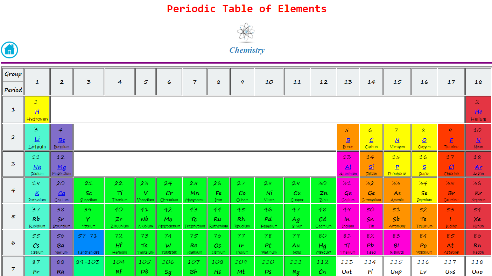

What is Periodic Table?
The periodic table is a tabular arrangement of the chemical elements, ordered by their atomic number (number of protons), electron configurations, and recurring chemical properties.
This ordering shows periodic trends, such as elements with similar behaviour in the same column. It also shows four rectangular blocks with some approximately similar chemical properties.
In general, within one row (period) the elements are metals on the left, and non-metals on the right.
Features
- Info about elements up Zirconium (40)
- Indexing & Coloring
- Simple Design
 About this project
We students of class 9 A have prepared this simple Periodic Table using HTML for Computer Exhibition 2073.
This Periodic Table is very easy to use with simple design.
About this project
We students of class 9 A have prepared this simple Periodic Table using HTML for Computer Exhibition 2073.
This Periodic Table is very easy to use with simple design.
This Periodic Table is very portable and can be displayed during Science Period.
It will make easier for students to read and understand this table.
Students can easily understand this table and get information from it.
Open the Periodic Table